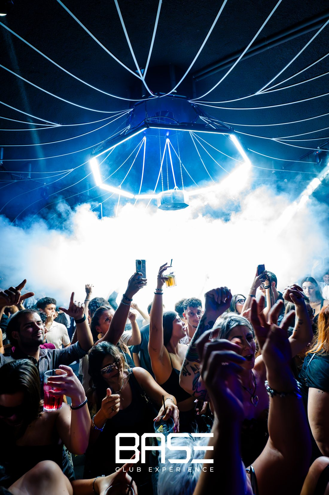
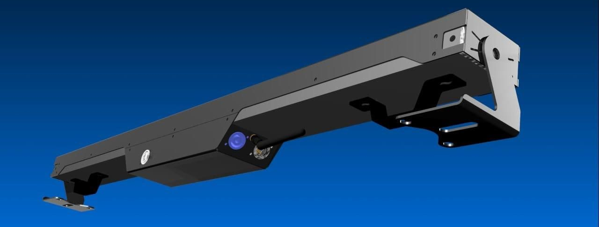

Two rows of RGB pixels and six white segments in one metre. Made to move your console's colours across a stage.

One sweep across the bar
The pixels sit in two rows of twenty. Macros treat them as columns, so a chase crosses the bar as one line of light.
Patch every pixel, pair the rows into 20 columns, or drive the whole bar as one colour.

Your colours, moving
Most macros keep the colour your console sends and move a mask over it. Chases, wipes, sparkles and waves, at any speed.
A separate channel runs twelve effects on the white segments.

Ready for a rig
Ethernet or WiFi with Art-Net and sACN, or a plain DMX chain. Each bar can repeat its universe to DMX fixtures.
Polaris finds every bar on the network and updates them together.

BASE Club Experience
Twelve Veyron at BASE in Sistiana, run from Resolume and managed with Polaris.

Technical data
- RGB
- 40 pixels, 2 rows × 20
- White
- 3 strips, 6 segments, 60° optic
- Output
- Whites ≈ 12,000 lm, RGB ≈ 2,400 lm (sources)
- Power
- 100–240 V AC, 200 W max
- Linking
- PowerCON IN/OUT, 10–12 bars per line
- Control
- Art-Net, sACN, DMX512, RDM
- Channels
- 4 to 133, 9 personalities
- Connectors
- PowerCON, XLR 3-pin, RJ45
- Size
- 1015 × 83 × 90 mm, 4.5 kg
- Protection
- IP20, indoor use
Everything to get started
Common questions
Can Veyron be used outdoors?
No. Veyron is IP20 and made for indoor use.
Which consoles work with it?
Any console or media server that sends Art-Net, sACN or DMX. Profiles are ready for Avolites Titan and Onyx.
How many bars on one power line?
Ten to twelve, linked through PowerCON, on a 16 A type C breaker.
Does it work without a console?
Yes. It can play recorded shows, run its macros, or hold the last look when the signal stops.
Planning a rig?
Tell us the venue and how many bars.